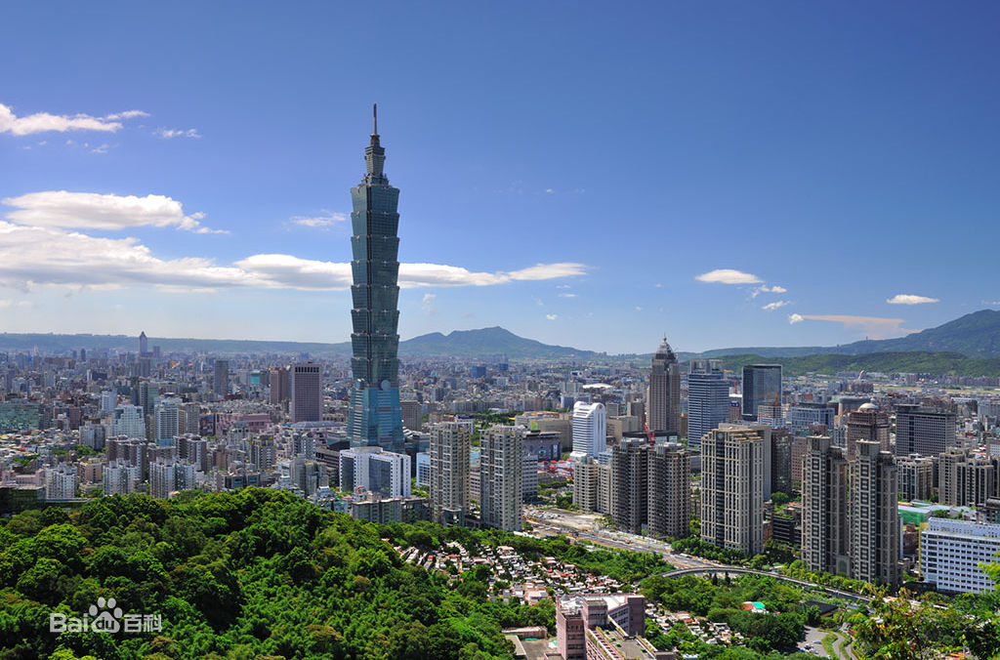
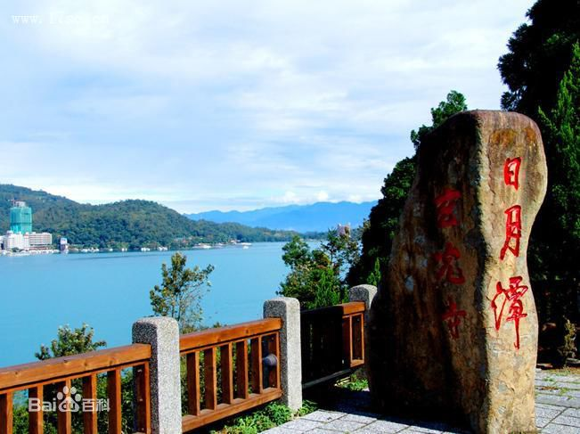
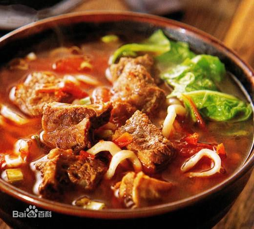
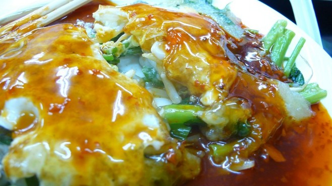
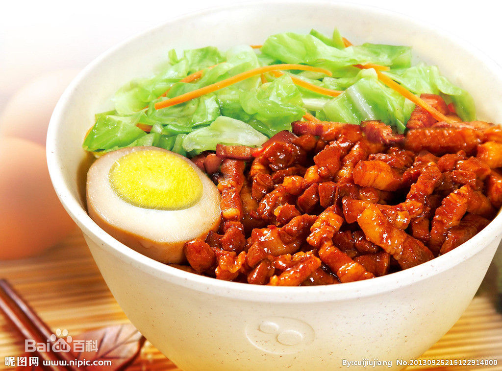

阿里山
关于台湾

大家印象
台湾很小，却很精致，精致得无法叫我们不爱。如果没有了思想，旅行大可换成操场上的溜弯儿。没办法，就是爱这样小玩意儿，它赋予了我们生命重要的意义。那些突发奇想的创意，与天共色的构思，就是我们的小命根儿。或许，某种意义上，台湾本身就是老天的一个绝佳创意。
走进台湾
台湾很小，台湾也很大，从城市到乡村，高山到大海，峡谷到湖潭，每个地方都散发着不同的风情，值得细细品味。享受台北，品味台南，领略高雄，漫步垦丁。一杯咖啡一本书，在多雨多雾多梦想的空中之城九份，慵懒一个悠闲的下午；饶富趣味的巷弄美食和地道小吃挑逗着味蕾，身为一个吃货在这里是如此的幸福；在诚品，发呆惬意两相宜，和书籍一起贩售的，还有生活方式；故宫博物院，收藏着五千年的中国历史，看不尽的艺术国宝；重峦迭峰、变化莫测的日月潭、引人入胜呈现森林之绝美的阿里山、一不小心就邂逅浪漫的爱河、晚风轻拂的澎湖湾，白浪逐沙滩……这不是风光片里的台湾，而是你眼前真实的迷人景致。 这个小时候课本中的芭蕉扇，是400年前被葡萄牙航海家赞呼“福尔摩沙”的美丽之岛。面积不大，却浓缩了令人赞叹的生态资源和那样鲜明的精神和文化，台湾岛上的风光，“山高、林密、瀑多、岸奇”，不仅仅是视觉的冲击，更是直抵内心的触动。在人文风貌上，宝岛兼容了各省移民、客家及原住民等不同族群，在饮食、服饰、建筑、语言及生活方式等各方面展现着迥异的气质。 看过你许多的电影，像是走过了许多段的人生，你用画面讲述故事，用音乐点燃内心的情感，恋恋台湾，也许每个人心中都藏了一份，有关台湾的，浪漫而偏执的梦。如果可以，我不想匆匆。 遇见你，是最美丽的意外。
最佳季节：9月-11月，天气晴朗凉爽，是适合旅游的好季节。 每年6~10月是台风季节，其中7~9月台风次数最为频繁，需特别留意气象报导。因此，出游台湾的最佳时间要尽量避免台风频繁时期，秋季出行是再好不过的选择。
建议游玩：7-8日
推荐游览路线
Day1:台北->诚品书店->台北101大楼->士林夜市->士林方舟1馆
Day2:台北->台北故宫->士林官邸->宁夏夜市->士林方舟1馆
Day3:日月潭->阿嬷香菇茶叶蛋->日月星舞民宿
Day4:垦丁->猫鼻头公园->鹅銮鼻公园->垦丁大街
Day5:垦丁->恒春古城->垦丁大街
Day6:淡水->渔人码头->师大夜市
Day7:台北->西门町
不可错过
---------------必玩景点排行榜---------------
Top 1--->台北

Top 2--->日月潭

Top 3--->垦丁

---------------必吃美食排行榜---------------
Top 1--->牛肉面

Top 2--->蚵仔煎

Top 3--->奇力鱼
